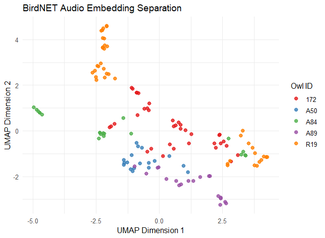
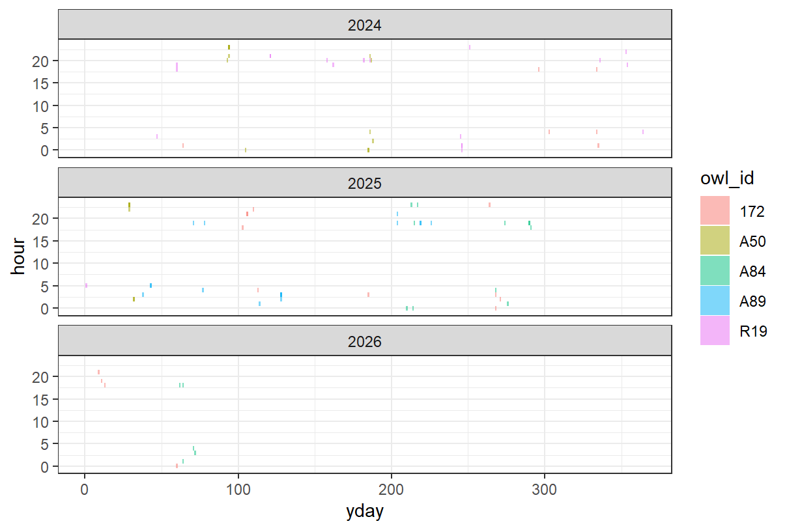

Working notes
2026 Jun.16
Downloaded files from Dropbox. In most of the case, one single owl occupied the same single site. There are cases that multiple owls can be detected in the same site, or one owl got detected in multiple sites.
Extracted audio from video
To do:
2026 Jun.17
- Set up the for loop for auto extraction of audio and metadata
To do:
2026 Jun.18
- Finished the “function” extracting audios and metadata from video folders
2026 Aug.26
Created the embedding separation, using only 3 sec clips full with vocalization. Seems like there are some separation.
Two clusters of orange - potentially from the “non insect” vocalization. Need to remove

2026 Sep.17
Added one figure to visualize the owl vocalization across time (day and hour)
But need more data to be visually meaningful, I think.
Still waiting for more video to come - have contacted Shiao for more data.

2026 Sep.28
Catch up with Shiao
Start a manuscript document
2026 Oct.2
Received the dataset from Shiao
Rename, rearranged the folder from Chinese to English
土庫北 - TKN
土庫南 - TKS
有利 - YOLI
順揚 - SHENYAN
2026 Oct.9
During event extraction by energy detection, there are several audios with no event reported. Perhaps we could try using BirdNET directly for the extraction. Here is the list of audios don’t have events detected (all under data/TAIGA_audio_2 directory):
172/SHENYAN/04290148.wav
172/SHENYAN/04290160.wav
172/SHENYAN/05010244.wav
172/SHENYAN/05040716.wav
172/SHENYAN/05050740.wav
172/SHENYAN/05070892.wav
172/SHENYAN/05070896.wav
172/SHENYAN/05090273.wav
172/SHENYAN/05110337.wav
172/SHENYAN/05150134.wav
172/SHENYAN/05150138.wav
172/SHENYAN/05150142.wav
172/SHENYAN/05150154.wav
172/SHENYAN/05170286.wav
172/SHENYAN/05240857.wav
172/SHENYAN/05240869.wav
172/SHENYAN/05240873.wav
172/SHENYAN/05270126.wav
172/SHENYAN/09210008.wav
172/SHENYAN/10030640.wav
172/SHENYAN/10060912.wav
172/SHENYAN/10090217.wav
172/SHENYAN/10120277.wav
172/SHENYAN/10120281.wav
172/SHENYAN/10130377.wav
172/SHENYAN/10190076.wav
172/SHENYAN/10200096.wav
172/SHENYAN/11300112.wav
172/SHENYAN/41_20240508_200222_XXEnh6Xc.wav
172/SHENYAN/41_20241029_040758_ZxtkrzG4.wav
172/SHENYAN/41_20241130_011329_Z27WuBUR.wav
A50/TKS/04030767.wav
A50/TKS/04090443.wav
A50/TKS/05140051.wav
A50/TKS/05240799.wav
A50/TKS/05250066.wav
A50/TKS/05250494.wav
A50/TKS/05260510.wav
A50/TKS/06010715.wav
A50/TKS/06100157.wav
A50/TKS/06110177.wav
A50/TKS/06150577.wav
A50/TKS/06160709.wav
A50/TKS/06160713.wav
A50/TKS/06160717.wav
A50/TKS/06160725.wav
A50/TKS/07050658.wav
A50/TKS/3_20240402_201828_mUothT5a.wav
A50/TKS/3_20240403_234130_8ggAdEMh.wav
A50/TKS/3_20240403_234755_SMJMfC5Z.wav
A50/TKS/3_20240704_041824_7jSm9ixW.wav
A50/TKS/3_20240705_204727_bcuBPANQ.wav
A50/TKS/3_20250129_225135_gNbiAZB3.wav
A84/YOLI/03030949.wav
A84/YOLI/03050957.wav
A84/YOLI/03050977.wav
A84/YOLI/03130511.wav
A84/YOLI/07240248.wav
A84/YOLI/07290337.wav
A84/YOLI/08030871.wav
A84/YOLI/08050298.wav
A84/YOLI/10010516.wav
A84/YOLI/10190216.wav
A84/YOLI/10220656.wav
A84/YOLI/10280197.wav
A84/YOLI/11110562.wav
A84/YOLI/11220871.wav
A89/TKN/05260294.wav
A89/TKN/06160562.wav
A89/TKN/08070046.wav
A89/TKN/08070050.wav
A89/TKN/59_20250207_033052_VvUtejUA.wav
A89/TKN/59_20250212_051942_HUj2ZmcY.wav
A89/TKN/59_20250508_035935_BVLGYPJk.wav
B32/YOLI/03020621.wav
B32/YOLI/03030941.wav
B32/YOLI/07260604.wav
B32/YOLI/09100063.wav
R19/SHENYAN/41_20240902_011556_ncoJ9SHK.wav
R19/SHENYAN/41_20241201_201423_gxmyJBVg.wav
R19/SHENYAN/41_20241229_045627_g8wgK3er.wav
R19/SHENYAN/41_20250101_051615_T6zd9YTL.wav
R19/SHENYAN/41_20250104_184750_hxMdodHT.wav
R19/SHENYAN/41_20250113_044703_BsWWUKEA.wav
R19/YOLI/6_20240229_185500_GViKkNNi.wav
Oct.16
Train BirdNET individual models directly using raw data, and with the “smart” detection format
Train on 2023 - 2025, test on 2026 (files arranged, trained finished)
5 fold validation (files arranged)
Start the manuscript, finished one section of methods and two tables
To do:
(Test and Train split)
(Quality of training data)
Oct.20
Finished running all the fold training… But!!
Need to redo everything!! Because there are Chinese characters in the file name. Also, there are none-insect calls mixed in the folder! Why…
Re-edited the video folder –> extract audio -> extract event -> do the file shuffle again…
Big Picture
- Extract audio from video, with metadata
- Extract clips of sounds from audio (by BirdNET GUI)
- Extract BirdNET embedding from each vocalization for each owls
- Run multi-variance analysis to see the similarity